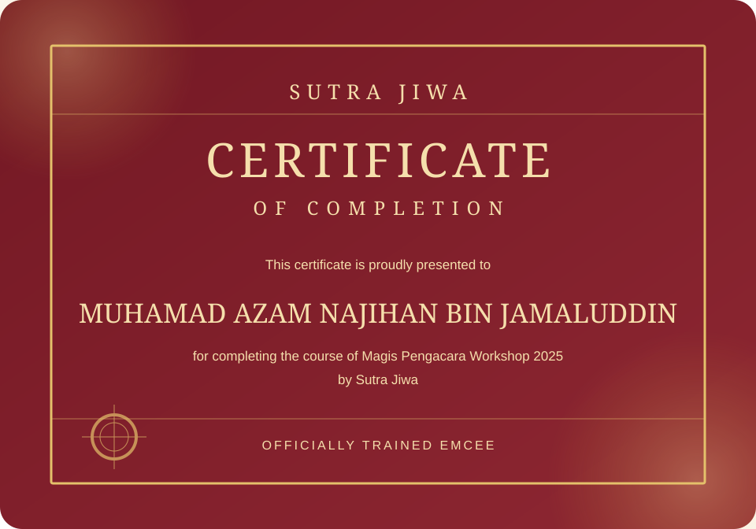

Tenang
Suasana selesa tanpa menenggelamkan kemeriahan atau menjadikan acara terasa kaku.
Pengacara Majlis · KL · Selangor · Negeri Sembilan
Pengacaraan yang tenang, tersusun dan dekat di hati — untuk majlis yang mahu dikenang kerana acara dan suasananya.
Perkahwinan · Korporat · Sekolah · Komuniti
01 · Tentang SenadaRasa
Setiap majlis mempunyai rentak dan rasanya sendiri. Seorang pengacara perlu membaca suasana, menghubungkan manusia dan memastikan setiap momen sampai dengan cara yang tepat.
Jihan membina pengacaraan berasaskan persediaan, susunan kata dan kepekaan terhadap tetamu. Nada berubah mengikut acara — formal apabila diperlukan, santai apabila sesuai.
SenadaRasa menyatukan suara pengacara, kehendak penganjur dan emosi tetamu dalam rentak yang sama.
Gaya Pengacaraan
Tenaga terkawal, bahasa jelas dan transisi yang tidak mematahkan suasana.
Suasana selesa tanpa menenggelamkan kemeriahan atau menjadikan acara terasa kaku.
Pengumuman, nama, transisi dan agenda diberi perhatian supaya acara mudah diikuti.
Susunan kata yang ikhlas membantu tetamu merasai makna di sebalik majlis.
Resepsi, akad, makan beradab dan acara keluarga.
Pelancaran, makan malam, seminar dan anugerah.
Hari sukan, hari keluarga dan program komuniti.
Pengalaman & Latihan
Pengalaman berulang bersama audiens dan latihan rasmi membentuk pendekatan Jihan di pentas.
Termasuk acara kanak-kanak dan hari sukan — mengasah keupayaan membaca tenaga audiens, memberi arahan jelas dan mengekalkan momentum.

Latihan di bawah Sutra Jiwa sebagai asas penyampaian, protokol dan pengurusan pentas.
Proses Tempahan
Kongsikan tarikh, masa, lokasi dan jenis majlis.
Perbincangan tentang audiens dan suasana yang diinginkan.
Atur cara, nama, pengumuman dan skrip diperhalusi.
Taklimat akhir dan pengacaraan mengikut rentak dipersetujui.
Semak Tarikh
Kongsikan butiran asas. Sistem akan menyediakan mesej WhatsApp lengkap untuk memulakan perbincangan.